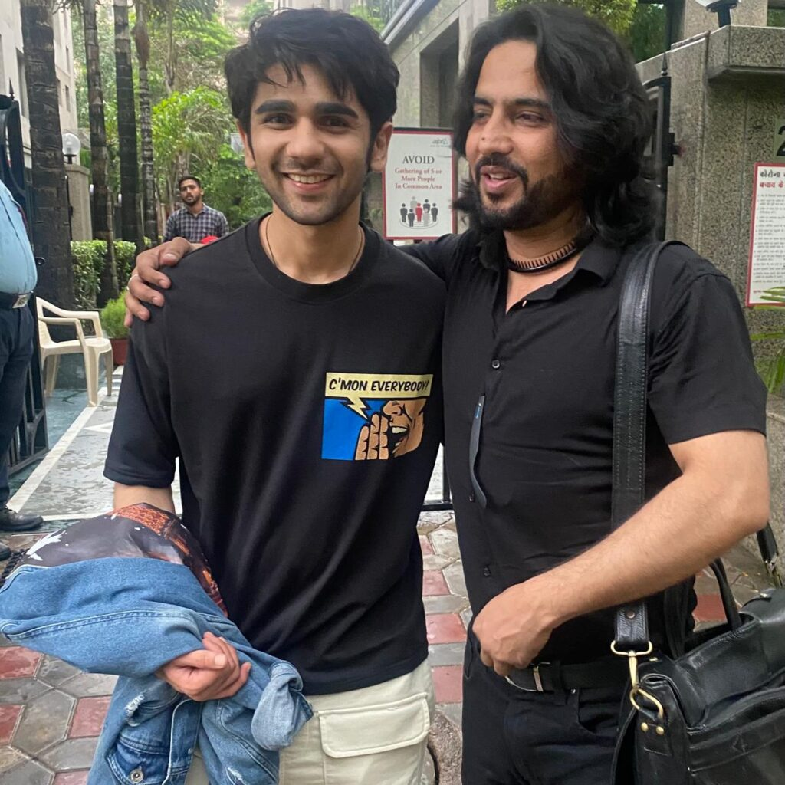
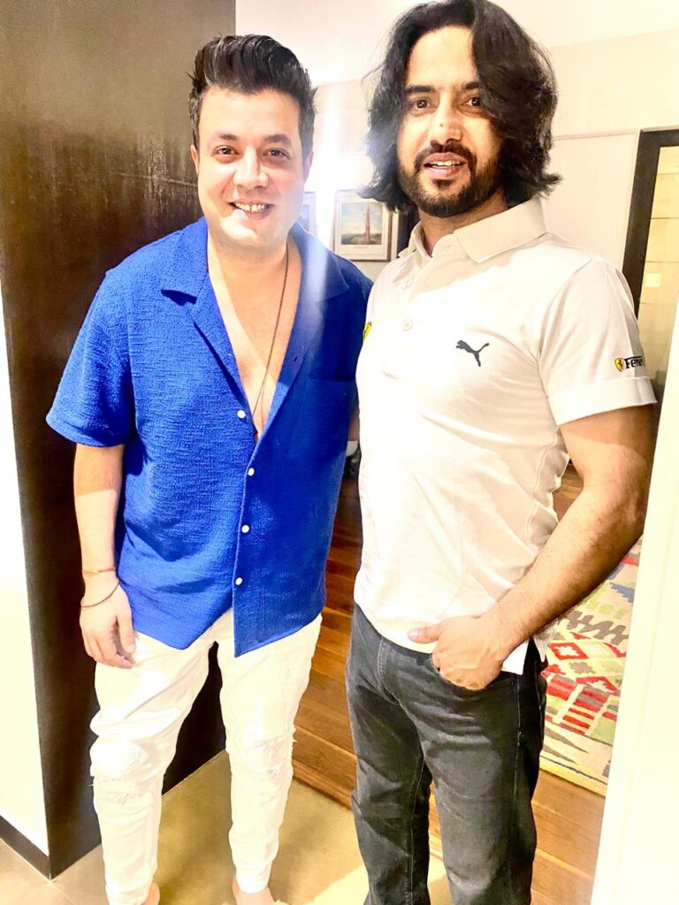

Haircut & Styling
Personalised haircuts and styling shaped around your features, hair texture and lifestyle.
Contact us for pricing
Enquire ↗BEST SALON IN DELHI · SOUTH EXTENSION
Discover Crème Salon by Zakir Khan — a premium unisex salon for expert hair, makeup, nails, skin and scalp services. Personalised consultations, thoughtful care and over two decades of beauty expertise, since 2003.

Thoughtful treatmentsSelected around you
Expert artistryPrecision in every touch
Premium productsProfessional-grade care
Personalised careNo rushed appointments
THE CRÈME EXPERIENCE
A personalised salon visit shaped around your style, hair goals and beauty preferences.

Begin with a personal consultation, move into your chosen beauty ritual, then finish with styling and simple aftercare guidance.
THE TREATMENT MENU
Choose a focused treatment or let our team curate the right experience for you.
THE CRÈME STANDARD
For over two decades, Crème has paired technical excellence with a deeply personal approach to hair, beauty and wellness.

YOUR SALON VISIT, BEAUTIFULLY SIMPLE

ABOUT CRÈME SALON BY ZAKIR KHAN
Established in 2003, Crème Salon by Zakir Khan is a luxury destination for contemporary hair, beauty and wellness in South Extension Part I, New Delhi. Built on artistry, precision and personalised care, Crème has earned the trust of clients who value exceptional craftsmanship and an uncompromising standard of excellence.
At Crème, beauty is deeply personal. Every service begins by understanding the individual — their features, lifestyle and aspirations. This consultation-led philosophy creates refined, bespoke results that feel timeless and effortlessly wearable. Our team combines advanced techniques, premium products and ongoing professional education to celebrate natural beauty while caring for hair and skin health.
Every detail, from the quality of our work to the comfort of our environment, is thoughtfully curated for an elevated salon experience.
ABOUT ZAKIR KHAN · HAIRSTYLIST DELHI
Zakir Khan is an Indian hairstylist known for precision, creativity and a personalised approach to hairdressing. With over two decades of experience, he is recognised for bespoke haircuts, advanced colour transformations and refined styling that enhances each client’s individuality.
His philosophy starts with understanding the person behind the style. Every consultation considers face shape, hair texture, lifestyle and personal preferences. By combining technical expertise with artistic vision and continuing to explore international techniques, Zakir creates contemporary looks that remain timeless while respecting the health and integrity of the hair.

Personalised cuts, colour transformations and contemporary styling.

Over two decades of styling expertise and lasting client relationships.
WORDS FROM OUR VALUED CLIENTS
Experiences shared by Crème Salon guests on Google.
Review us on Google ↗★★★★★I’ve been coming to this salon for over 15 years, and no matter where life has taken me—even after moving and trying several premium salons—I always come back here. I have never found the same level of satisfaction anywhere else.
Zakir is incredibly talented and has a wonderful eye for haircuts and hair colour. Every single time I visit, he gives me a fresh look that perfectly suits my face and personality. He genuinely cares about his clients, taking time to recommend the right hair care, treatments and simple home remedies for healthy hair growth.
The salon is always spotless, and the entire team is polite, warm and welcoming. They make you feel comfortable from the moment you walk in. Hair colouring takes time, but delicious refreshments make the experience feel like being pampered in a warm, luxurious and homely environment.
My latest visit was another wonderful experience. Zakir transformed my look once again, and I left feeling happy and confident. Thank you, Zakir, for your passion, creativity, consistency and genuine care over all these years. Highly recommended!
★★★★★This was my second experience and it was amazing. Abhishek sir did a great job. ☺️
★★★★★Zakir is the best. For the last 15 years I’ve been visiting the salon and every time he gives me an excellent haircut and colour. The salon is neat and clean and I love coming here. I feel totally changed whenever I visit. Thank you so much, Zakir, for all the magic!
★★★★★I was struggling to find a good hairstylist in South Delhi and a friend suggested Zakir Khan at Crème Salon. I found an amazing person who not only has a great sense of style, but also knows what will suit your face and style. Highly recommended for those who want style with class.
★★★★★I had a haircut and root touch-up. I was welcomed warmly by reception and the whole team. Everyone was courteous throughout, the colour was done with care and the haircut met my expectations without shortening the length. Shanker did a wonderful job. Highly recommend this salon.
★★★★★I had a haircut and beard trim from Shanker, and I’m really happy with how it turned out. He did an excellent job. The entire staff was warm, courteous and welcoming throughout. Highly recommend Shanker if you’re looking for a great stylist.
★★★★★Hair dressing and hair styling.
★★★★★Had the best haircut by Imran. He gave me a haircut based on my facial structure and advised me how to maintain it as well. Amazing job!
★★★★★This was my first time getting my hair coloured and I’m very happy with the result. ✨

LEARN · CREATE · GROW
A professional hair stylist course teaches cutting, colouring, chemical treatments and styling through hands-on practice.
As the beauty industry evolves, professionals need creativity, technical expertise, precision and a commitment to excellence. At Crème Salon Academy, aspiring artists learn through education that reflects the standards of the modern beauty industry.
Structured programs in hairdressing, hair colouring, hairstyling, beauty and makeup blend technical knowledge with hands-on learning. Students build confidence, refine their skills and develop a strong foundation for long-term success. Our aim is to nurture creativity, professionalism, craftsmanship and a lifelong passion for learning.
More details ↗A GLIMPSE OF THE EXPERIENCE


VISIT CRÈME SALON
Visit Crème Salon by Zakir Khan in South Extension Part I, New Delhi. Contact our team to confirm availability and plan your visit.
BEFORE YOUR VISIT
We recommend booking in advance so we can reserve the right specialist and enough time for your experience.
Yes. Tell us your preference when booking and we'll confirm availability.
Arriving around 10 minutes before your appointment gives you time to settle in without feeling rushed.
Walk-ins are welcome when availability allows, but appointments are recommended for the best experience.
Please contact the salon directly for its rescheduling policy.
Please contact the salon to confirm accepted payment methods.
RESERVE YOUR EXPERIENCE
Choose what interests you. We'll confirm the best treatment, specialist and available time.